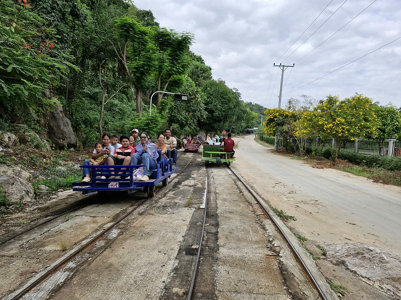

Bamboo Train ជាទីកន្លែងទេសចរល្បីស្ថិតនៅស្រុកបាណន់ ខេត្តបាត់ដំបង ខាងជិតភ្នំបាណន់។ វាជារថភ្លើងធ្វើពី ទូកខ្នងឫស ដាក់លើស្ទូចរថភ្លើងចាស់ៗ។ រថភ្លើងនេះដំណើរការដោយម៉ាស៊ីនតូច ហើយជាពិសេសប្រើសម្រាប់ទេសចរនៅសម័យបច្ចុប្បន្ន។
ការជិះរថភ្លើងខ្នងឫស អ្នកទេសចរអាចទទួលបានបទពិសោធន៍មើល ទេសភាពស្រែចំការនិងជីវភាពអ្នកភូមិ ជុំវិញបាត់ដំបង។ វាជាបទពិសោធន៍សប្បាយ និងប្លែក ដែលបង្ហាញពីភាពច្នៃប្រឌិត និងវិធីសាស្រ្តដឹកជញ្ជូនប្រពៃណីរបស់ជនជាតិខ្មែរ។